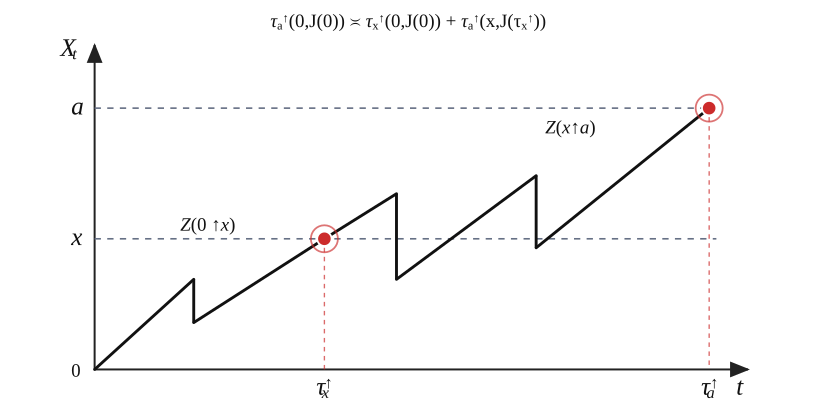
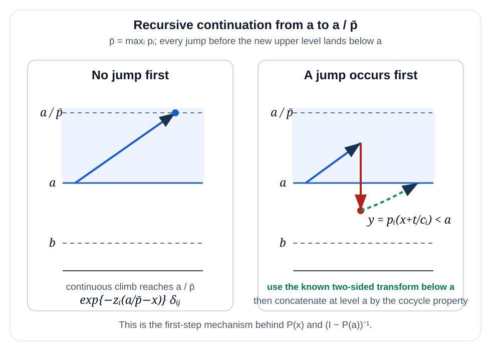
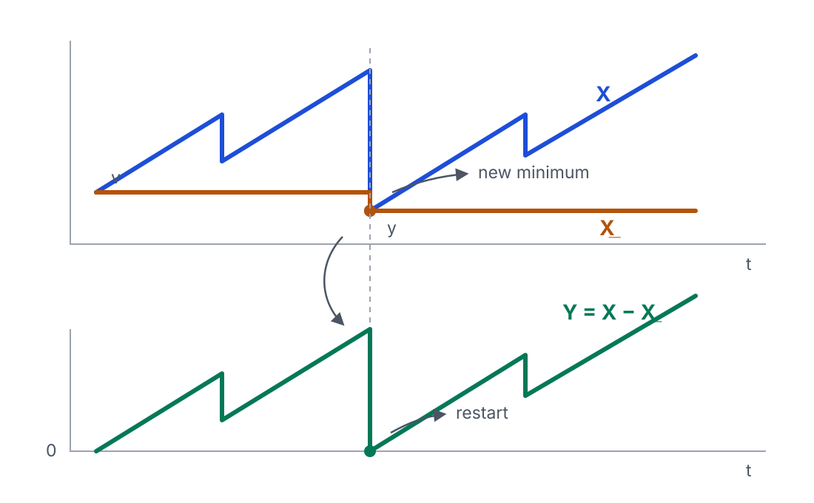
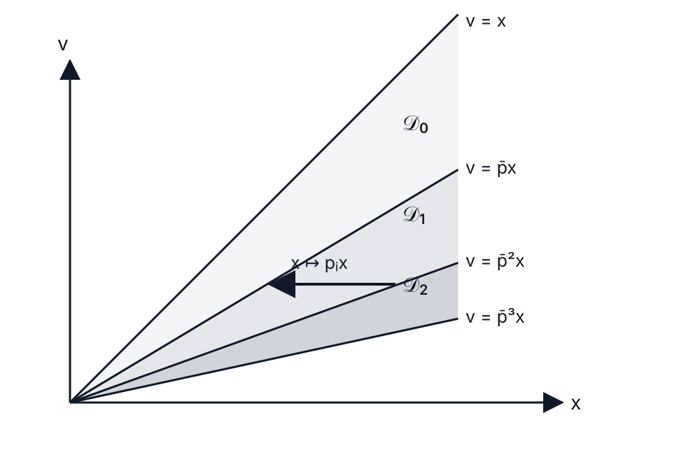

Exit Problems for
Markov-Modulated AIMD Processes

AIMD processes
AIMD means Additive-Increase Multiplicative-Decrease:
a positive process
that grows gradually and is reduced proportionally at random decrease epochs.
$X$ grows linearly
loss, congestion, reset
$X\mapsto pX$
AIMD dynamics
\[ \frac{dX_t}{dt}=\frac{1}{c},\qquad T_n \le t \lt T_{n+1}, \]
\[ X(T_n)=pX(T_n-),\qquad 0\lt p\lt1. \]
\[ X_{n+1}= \begin{cases} X_n + 1/c, & \text{with prob. } (1-\delta),\\ p X_n, & \text{with prob. } \delta \end{cases} \qquad 0\lt p \lt1. \]
AIMD sample path

AIMD and TCP
TCP congestion control protocol is among classical applications:
it cautiously increases the transmission rate when transmission succeeds,
to decrease it sharply when congestion is detected.
\[ W\longmapsto W+1 \]
Probe the available bandwidth by small additive steps.
\[ W\longmapsto p W,\qquad p\approx\frac{1}{2}. \]
React quickly by reducing the current congestion window.
Earlier TCP/AIMD work
The TCP motivation led to a probabilistic literature on AIMD and growth-collapse dynamics.
AIMD algorithms and exponential functionals
Ann. Appl. Probab. 14(1), 90-117.
A Markovian growth-collapse model
Adv. in Appl. Probab. 38(1), 221-243.
TCP and iso-stationary transformations
Queueing Syst. 63, 459-475.
AIMD and Partial resetting
AIMD is one instance of a broader class of processes with partial resetting:
deterministic or stochastic growth interrupted by resets that retain a fraction of the current
state.
Resetting appears in intermittent search and restart mechanisms, from abstract Markov processes to stress-release models.
Evans et al. (2020), Evans and Majumdar (2011), Gupta and Jayannavar (2022), Bénichou et al. (2011), Avrachenkov et al. (2013), Borovkov and Vere-Jones (2000).
Queueing applications include catastrophe rates, random clearing events and growth-collapse models.
Artalejo et al. (2006), Kella et al. (2003), Boxma et al. (2006), Löpker and Stadje (2011).
more on Partial resetting
Resetting ideas appear in RNA polymerase recovery, enzymatic reactions, molecular inhibition, pollination and ecological disturbances.
Grünwald and Singer (2010), Roldan et al. (2016), Berezhkovskii et al. (2016), Robin et al. (2018, 2019), Reuveni et al. (2014).
Related models are used in stochastic thermodynamics, quantum resetting, environmental jump processes, insurance and financial crashes.
Fuchs et al. (2016), Mukherjee et al. (2018), Dahlenburg et al. (2021), Mau et al. (2014), Suweis et al. (2010), Akahori et al. (2022), Sornette (2017).
Our starting point:
The study van der Hofstad et al. (2023)† looked at exit-time identities for the scalar model.
The model is specified by a triplet $(c,\lambda,p)$:
- deterministic growth at rate $1/c$;
- Poisson jumps with rate $\lambda$;
- mult. decrease factor $p\in(0,1)$.
that determines the dynamics of the $X$ process:
\begin{align*} dX_t &= dt /c ,\qquad T_n \le t \lt T_{n+1},\\ X(T_n) &= p X(T_n-),\\ T_{n+1}-T_n &\sim \Exp(\lambda). \end{align*}
A finite-state Markov environment $J$ modulates all local parameters.
\[ (c_i,\lambda_i,p_i),\qquad \mQ=(q_{ij}),\qquad i,j\in\{1,\dots,m\}. \]
The scalar transforms of the exit-times become matrix-valued transforms, indexed by the starting and ending environment regime.
\begin{align*} dX_t&=dt/c_{i_n}, \qquad T_n\le t\lt T_{n+1},\\ X(T_{n+1})&=p_{i_n}X(T_{n+1}-),\\ T_{n+1}-T_n &\sim \Exp(\lambda_{i_n}). \end{align*} \(J(t)=i_n\), and \(\P(i_{n+1}=j\mid i_n=i)=q_{ij}\).
†R. van der Hofstad, S. Kapodistria, Z. Palmowski, S. Shneer. J. Appl. Probab. 60 (2023)
Markov modulated AIMD simulating one sample path
Markov modulated AIMD sample path

Objects of interest
For fixed levels $0\le b\lt a$, define
\[ \tau_{\up a}=\inf\{t\ge0:X_t\ge a\},\qquad \tau_{\down b}=\inf\{t\ge0:X_t\le b\}. \]
Upward one-sided transform $\mZ(w;\U{x}{a})$
\[ \ \mZ_{ij}(w;\U{x}{a})=\E_{x,i}\!\big[\e^{-w\tau_{\up a}};\,J(\tau_{\up a})=j\big]. \]
Two-sided upward transform $\mZ(w;\UD{x}{a}{b})$
\[ \mZ_{ij}(w;\UD{x}{a}{b})=\E_{x,i}\!\big[\e^{-w\tau_{\up a}};\,\tau_{\up a}\lt\tau_{\down b},\,J(\tau_{\up a})=j\big]. \]
One jump, one regime change

While in state $i$, the AIMD parameters are
$$ (c_i,\lambda_i,p_i). $$
The level then evolves according to two simple rules.
- Between jumps: $X$ increases with slope $1/c_i$.
- At a jump: $X\mapsto p_iX$, and the new state is $j$ with probability $q_{ij}$.
$$ (x,i)\longmapsto (p_i x,j), \qquad \mathbb P(i\to j)=q_{ij}. $$
Some notation
Let $\vecz=(z_i)$ and $\vecgamma=(\gamma_i)$, with:
\[ z_i=c_i(\lambda_i+w),\qquad \gamma_i=\frac{c_i\lambda_i}{p_i}. \]
Diagonal and selector matrices:
\[ \mExp(\vecv)=\diag(\e^{v_i}),\qquad \mDelta(\vecv)=\diag(v_i), \]
\[ \mE_i=(\delta_{ik}\delta_{i\ell})_{k\ell}. \]
Some useful matrices:
\[ \mA(s)=\mDelta\!\left(\frac{\vecgamma}{\vecz-s}\right),\qquad \mB=-\mDelta(\vecgamma)^{-1}. \]
Upward one-sided exit: $\mZ(\U{x}{a}) = \E_x\!\big[\e^{-w\tau_{\up a}};\,J(\tau_{\up a})\big]$
For $0\lt x\lt a$, upward passage is continuous, so the process must cross $x$ before $a$.
\[ \mZ(\U{0}{a})=\mZ(\U{0}{x})\,\mZ(\U{x}{a}). \]
Consequently,
\[ \boxed{\;\mZ(\U{x}{a})=\mZ(\U{0}{x})^{-1}\mZ(\U{0}{a})\;} \]
and we are left with computing \(\mZ(\U{0}{x})\) for any \(x\ge0\).
Main ingredient
\[ \tau_{\up a}(0,J(0)) \disteq \tau_{\up x}(0,J(0)) + \tau_{\up a}(x,J(\tau_{\up x}(0,J(0))). \]
Strong Markov property at the hitting times

Upward exit: condition on the first jump — $\mZ(\U{x}{a}) = \E_x\!\big[\e^{-w\tau_{\up a}};\,J(\tau_{\up a})\big]$
First-step analysis, one entry at a time:
$$ \mZ_{ij}(\U{0}{a})=\underbrace{\mred{\e^{-az_i}\delta_{ij}}}_{\text{no jump before }a}+\underbrace{\displaystyle\int_0^{\mred{p_i}a}\mred{\gamma_i}\e^{-(\mred{z_i}/\mred{p_i})x}\sum_k\mred{q_{ik}}\mred{\mZ_{kj}}(\U{x}{a})\,dx\vphantom{\Bigg|_X}}_{\text{first jump occurs before }a}. $$
In matrix form:
$$ \mZ(\U{0}{a})=\mgreen{\mExp(-a\vecz)}+\mgreen{\mDelta(\vecgamma)}\int_0^\infty\mgreen{\mDelta(x\le a\vecp)}\mgreen{\mExp(-(\vecz/\vecp)x)}\mgreen{\mQ\,\mZ}(\U{x}{a})\,dx. $$
Upward exit: condition on the first jump — $\mZ(\U{x}{a}) = \E_x\!\big[\e^{-w\tau_{\up a}};\,J(\tau_{\up a})\big]$
In matrix form:
$$ \mZ(\U{0}{a})=\mExp(-a\vecz)+\mDelta(\vecgamma)\int_0^\infty\mDelta(x\le a\vecp)\mExp(-(\vecz/\vecp)x)\mQ\,\mred{\mZ}(\U{x}{a})\,dx. $$
Using the spatial factorization:
$$ \mZ(\U{0}{a})=\mExp(-a\vecz)+\mDelta(\vecgamma)\int_0^\infty\mDelta(x\le a\vecp)\mExp(-(\vecz/\vecp)x)\mQ\,\mgreen{\mZ^{-1}(\U{0}{x})\mZ(\U{0}{a})}\,dx. $$
Upward exit: condition on the first jump — $\mZ(\U{x}{a}) = \E_x\!\big[\e^{-w\tau_{\up a}};\,J(\tau_{\up a})\big]$
After the spatial factorization:
$$ \mred{\mZ(\U{0}{a})}=\mExp(-a\vecz)+\mDelta(\vecgamma)\int_0^\infty\mDelta(x\le a\vecp)\mExp(-(\vecz/\vecp)x)\mQ\,\mZ^{-1}(\U{0}{x})\mred{\mZ(\U{0}{a})}\,dx. $$
Multiply on the right by $\mZ^{-1}(\U{0}{a})$:
$$ \mgreen{\mId}=\mExp(-a\vecz)\mgreen{\mZ^{-1}(\U{0}{a})}+\mDelta(\vecgamma)\int_0^\infty\mDelta(x\le a\vecp)\mExp(-(\vecz/\vecp)x)\mQ\,\mgreen{\mZ^{-1}(\U{0}{x})}\,dx. $$
Upward scale matrix: Laplace transform — $\mZ(\U{x}{a}) = \E_x\!\big[\e^{-w\tau_{\up a}};\,J(\tau_{\up a})\big]$
We have obtained an equation for the inverse scale matrix $\mU(a)=\mZ^{-1}(\U{0}{a})$:
$$ \mId=\mExp(-a\vecz)\mU(a)+\mDelta(\vecgamma)\int_0^\infty\mDelta(x\le a\vecp)\mExp(-(\vecz/\vecp)x)\mQ\,\mU(x)\,dx. $$
Take the spatial Laplace transform
$$ \tmU(s)=\int_0^\infty\e^{-sa}\mU(a)\,da. $$
Reversing the order of integration and separating the regimes gives
$$ \boxed{\tmU(s)=\mA(s)\mB+\mA(s)\sum_{i=1}^m\mE_i\mQ\,\tmU(s/p_i).} $$
Upward scale matrix: solving the recursion — $\mZ(\U{x}{a}) = \E_x\!\big[\e^{-w\tau_{\up a}};\,J(\tau_{\up a})\big]$
For a regime word $\alpha=(i_1,\ldots,i_n)$, define $\alpha\upord_k=(i_1,\ldots,i_k)$ and $p_\alpha=\prod_{\ell=1}^{|\alpha|}p_{i_\ell}$.
$$ \mK_\alpha(s)=\mA(s)\mE_{i_1}\mQ\prod_{k=2}^{|\alpha|}\mA\!\left(s/p_{\alpha\upord_{k-1}}\right)\mE_{i_k}\mQ. $$
Summing over all possible regime words defines the spatial resolvent
$$ (\cR F)(s)=F(s)+\sum_{n\ge1}\sum_{|\alpha|=n}\mK_\alpha(s)F(s/p_\alpha). $$
$$ \boxed{\tmU(s)=(\cR(\mA\mB))(s).} $$
Comparison with the scalar benchmark
$$ Z^\up(w;x,a)=\frac{Z^\up(w;0,a)}{Z^\up(w;0,x)} $$
$$ Z^\up(w;0,x)=\left(\sum_{k=0}^{\infty}\frac{(x/(w+\lambda))^k}{k!\,{\color{blue}(\lambda/(w+\lambda);p)_k}}\right)^{-1}, \qquad (c=1). $$
The scalar iteration index $k$ becomes a regime word $\alpha=(i_1,\ldots,i_k)$.
The geometric factor $p^k$ becomes the path-dependent product $p_\alpha=\prod_{\ell=1}^{|\alpha|}p_{i_\ell}$.
The scalar $q$-series is replaced by the non-commutative spatial resolvent $\cR$, with $\mE_i\mQ$ recording the regime selected at each jump.
For $m=1$ there is only one possible word of each length, so the matrix construction
reduces to the scalar formula.
From $q$-calculus: ${\color{blue}(x;q)_n}=(1-x)(1-xq)\cdots(1-xq^{n-1})$.
Downward one-sided exit: first jump — $\mZ(\D{x}{b})=\E_x\!\big[\e^{-w\tau_{\down b}};\,J(\tau_{\down b})\big]$
For $x\le b$, $\mZ(\D{x}{b})=\mId$. For $x>b$, downward passage can only occur at a jump.
Condition on the first jump, with $T_i\sim\Exp(\lambda_i)$:
$$ \mZ(\D{x}{b})=\sum_{i=1}^m\mE_i\int_0^\infty\lambda_i\e^{-(w+\lambda_i)t}\,\mQ\,\mZ\!\left(\D{p_i(x+t/c_i)}{b}\right)\,dt. $$
Taking the spatial Laplace transform, exchanging the order of integration and evaluating the inner integral gives:
$$ \widetilde{\mZ}_b(s)=\mA(s)\int_0^\infty\mDelta(y\ge\vecp b)\Big[\mExp(-sy/\vecp)-\mExp\!\bigl(b(\vecz-s\mathbf1)-(\vecz/\vecp)y\bigr)\Big]\mQ\,\mZ(\D{y}{b})\,dy. $$
Downward exit: transform and reverse — $\mZ(\D{x}{b})=\E_x\!\big[\e^{-w\tau_{\down b}};\,J(\tau_{\down b})\big]$
Set $\widetilde{\mZ}_b(s)=\int_b^\infty\e^{-sx}\mZ(\D{x}{b})\,dx$.
Transform the first-step equation:
$$ \widetilde{\mZ}_b(s)=\mDelta(\vecgamma)\int_b^\infty\!\!\int_0^\infty\mDelta(y\ge x\vecp)\,\mExp\!\left((\vecz-s\mathbf1)x-(\vecz/\vecp)y\right)\mQ\,\mZ(\D{y}{b})\,dy\,dx. $$
Reverse the region $x\ge b,\;y\ge x\vecp$ componentwise:
$$ \widetilde{\mZ}_b(s)=\mA(s)\int_0^\infty\mDelta(y\ge\vecp b)\Big[\mExp(-sy/\vecp)-\mExp\!\bigl(b(\vecz-s\mathbf1)-(\vecz/\vecp)y\bigr)\Big]\mQ\,\mZ(\D{y}{b})\,dy. $$
For $p_i b\le y\lt b$, $\mZ(\D{y}{b})=\mId$.
This gives the explicit forcing $\mR_b(s)$.
Evaluating the inner $x$-integral produces
$$ \e^{-(s/p_i)y}\;\longrightarrow\;\widetilde{\mZ}_b(s/p_i), $$
$$ \e^{-(z_i/p_i)y}\;\longrightarrow\;\widetilde{\mZ}_b(z_i/p_i). $$
Downward exit: the same spatial recursion — $\mZ(\D{x}{b})=\E_x\!\big[\e^{-w\tau_{\down b}};\,J(\tau_{\down b})\big]$
$\mR_b(s)$ is the explicit contribution from $p_i b\le y\lt b$.
$$ \mH_b=-\sum_{i=1}^m\e^{z_i b}\mE_i\mQ\,\widetilde{\mZ}_b(z_i/p_i). $$
With
$$ \mF_b^{\mH_b}(s)=\mR_b(s)\mQ+\e^{-bs}\mH_b, $$
the transform equation becomes
$$ \boxed{\widetilde{\mZ}_b(s)=\mA(s)\mF_b^{\mH_b}(s)+\mA(s)\sum_{i=1}^m\mE_i\mQ\,\widetilde{\mZ}_b(s/p_i).} $$
This is the same recursion as in the upward problem, with a different forcing term. Hence
$$ \boxed{\widetilde{\mZ}_b(s)=\bigl(\cR(\mA\mF_b^{\mH_b})\bigr)(s).} $$
Finite-dimensional closure: solving for $\mH_b$ — $\mZ(\D{x}{b})=\E_x\!\big[\e^{-w\tau_{\down b}};\,J(\tau_{\down b})\big]$
Separate the constant and linear dependence on $\mH_b$:
$$ \mH_0(s)=\mA(s)\mR_b(s)\mQ,\qquad \mH_1(s)=\mA(s)\e^{-bs}, $$
$$ \boldsymbol{\Gamma}_b=\sum_{i=1}^m\e^{z_i b}\mE_i\mQ(\cR\mH_0)(z_i/p_i),\qquad \boldsymbol{\Pi}_b=\sum_{i=1}^m\e^{z_i b}\mE_i\mQ(\cR\mH_1)(z_i/p_i). $$
The compatibility condition is now finite-dimensional:
$$ (\mId+\boldsymbol{\Pi}_b)\mH_b=-\boldsymbol{\Gamma}_b. $$
If $\mId+\boldsymbol{\Pi}_b$ is nonsingular,
$$ \boxed{\mH_b=-(\mId+\boldsymbol{\Pi}_b)^{-1}\boldsymbol{\Gamma}_b.} $$
Boundary forcing $\mR_b(s)$ — $\mZ(\D{x}{b})=\E_x\!\big[\e^{-w\tau_{\down b}};\,J(\tau_{\down b})\big]$
The known strip $p_i b\le y\lt b$ gives $\mR_b(s)=\diag(R_i(s;b))$, where
$$ R_i(s;b)=\frac{p_i}{s}\bigl(\e^{-sb}-\e^{-sb/p_i}\bigr)-\frac{p_i}{z_i}\e^{(z_i-s)b}\bigl(\e^{-z_i b}-\e^{-z_i b/p_i}\bigr). $$
Two-sided upward exit: build it strip by strip

Compute the transform on a first strip where the exit mechanism is explicit.
With the transform is known below $a$.
On the next strip $a\le x\lt a/\bar p$, every jump lands below $a$:
$$ p_i x\lt a. $$
After the first jump, the continuation is therefore already known.
Two-sided upward exit: seed and continuation
If $b\lt a\le b/\bar p$, the transform is explicit:
$$ \boxed{\mZ(\UD{x}{a}{b})=\mExp(-(a-x)\vecz).} $$
If the transform is known below $a$, then for $a\le x\lt a/\bar p$:
$$ \boxed{\mZ(\UD{a}{a/\bar p}{b})=(\mId-\mP(a))^{-1}\mExp(-(a/\bar p-a)\vecz).} $$
Here $\bar p=\max_i p_i$ and $\mP(x)$ collects the known first-jump contribution, with $$P_{ij}(x)=\gamma_i\e^{z_i x}\int_{p_i x}^{p_i a/\bar p}\sum_hq_{ih}\mZ_{hj}(w;\UD{y}{a}{b})\e^{-(z_i/p_i)y}\,dy.$$
Two-sided downward exit: $\mZ(\DU{x}{a}{b}) = \E_x\!\big[\e^{-w\tau_{\down b}};\,\tau_{\down b}\lt\tau_{\up a},\,J(\tau_{\down b})\big]$
Define
\[ \mZ_{ij}(w;\DU{x}{a}{b})=\E_{x,i}\big[\e^{-w\tau_{\down b}};\tau_{\down b}\lt\tau_{\up a},\,J(\tau_{\down b})=j\big]. \]
\[ \boxed{\;\mZ(\DU{x}{a}{b})=\mZ(\D{x}{b})-\mZ(\UD{x}{a}{b})\mZ(\D{a}{b})\;} \]
Reflection at the running infimum
Starting with a current minimum $v>0$, define
$$ \underline X_t=v\wedge\inf_{0\le s\le t}X(s),\qquad Y_t=X(t)-\underline X_t,\qquad \tau_a=\inf\{t\ge0:Y_t\ge a\}. $$
The reflected height $Y_t$ alone is not Markovian.
We retain the augmented state
$$ (X_t,\underline X_t,J_t). $$
If a jump creates a new minimum $y$, then
$$ (X_t,\underline X_t)=(y,y),\qquad Y_t=0. $$
Define the matrix
$$ (\mH_a(v))_{ij}=\E_{(v,v),i}\!\left[\e^{-w\tau_a};\,\tau_a\lt\infty,\,J(\tau_a)=j\right]. $$
$\mH_a(v)$ is the continuation value after a jump creates the new minimum $v$.
Reflection: success or restart

Reach height $a$ above the current minimum $v$:
$$ \mZ\!\left(\UD{v^+}{v+a}{v}\right). $$
A jump creates $y\lt v$, so the reflected process restarts at $0$ with continuation
$$ \mH_a(y). $$
In the paper this is written as $\mH_a=\cT_a\mH_a$, where $(\cT_a\mG)(v)=\mZ(\UD{v^+}{v+a}{v})+(\cV_a\mG)(v)$.
Reflection: a fixed-point problem
The restart mechanism gives an affine map on matrix-valued functions of the current minimum:
$$ (\cT_a\mG)(v)=\mZ\!\left(\UD{v^+}{v+a}{v}\right)+(\cV_a\mG)(v). $$
The required matrix function is the fixed point
$$ \boxed{\mH_a=\cT_a\mH_a.} $$
Start from $\mH_a^{(0)}=0$ and iterate
$$ \boxed{\mH_a^{(n+1)}=\cT_a\mH_a^{(n)}.} $$
More precisely, $\|\mH_a-\mH_a^{(n)}\|_\infty\le\beta^n$, with $\beta=\max_i\frac{\lambda_i}{w+\lambda_i}(1-\e^{-z_i a})\lt1$.
One Picard step: work from left to right
Let $\bar p=\max_i p_i$ and set $ x_k(v)=\frac{v}{\bar p^k}$ and set:
$$\calD_k=\{(x,v):x_k(v)\le x\le x_{k+1}(v)\}.$$
If $(x,v)\in\calD_k$ and a jump does not create a new minimum, then $ p_i x\le\bar p x\le x_k(v)$.
So the post-jump value lies in territory already constructed.

For fixed $v$ and target $v+a$, only finitely many regions are needed.
From the minimum to any starting point
Once $\mH_a(v)$ is known, let $\mF_a(w;x,v)$ be its continuation for $v\le x\le v+a$.
$$ \mF_a(w;v,v)=\mH_a(v),\qquad \mF_a(w;v+a,v)=\mId. $$
Between the two boundaries, $\mF_a$ is obtained by the same first-step construction used in the Picard step.
$$ \boxed{\E_{(x,v),i}\!\left[\e^{-w\tau_a};\,\tau_a\lt\infty,\,J(\tau_a)=j\right]=(\mF_a(w;x,v))_{ij}.} $$
The proof is closed by the bounded Doob martingale associated with the terminal reflected-passage variable.
Why does the construction give the transform?
Stop the process when the reflected height reaches $a$ and consider
$$ \mM_t=\e^{-w(t\wedge\tau_a)}\mE_{J(t\wedge\tau_a)}\,\mF_a\!\left(w;X(t\wedge\tau_a),\underline X_{t\wedge\tau_a}\right). $$
The first-step identities make $\mM_t$ a bounded Doob martingale.
The same restart identity holds from the current state $(X_t,\underline X_t,J_t)$.
$Y_{\tau_a}=a$, hence
$$ \mF_a(w;X(\tau_a),\underline X_{\tau_a})=\mId. $$
Take-home points
One recursion
Upward and downward one-sided exits are driven by the same spatial resolvent.
Build and restart
Two-sided exit is built strip by strip; reflection restarts at each new minimum.
Martingale closure
The reflected passage transform is identified by a bounded Doob martingale.
Questions
Thank you.
Bernardo D'Auria, University of Padova
Joint work with Zbigniew Palmowski
Selected references
- R. van der Hofstad, S. Kapodistria, Z. Palmowski, S. Shneer, Unified approach for solving exit problems for additive-increase and multiplicative-decrease processes, J. Appl. Probab. 60 (2023), 85-105.
- B. D'Auria and Z. Palmowski, Exit Problems for Additive-Increase and Multiplicative-Decrease Markov-Modulated Processes, arXiv:2609.36269 [math.PR], 28 Sep 2026.
- O. Kella and W. Whitt, Useful martingales for stochastic storage processes with Lévy input, J. Appl. Probab. 29 (1992), 396-403.
- S. Asmussen and O. Kella, A multi-dimensional martingale for Markov additive processes and its applications, Adv. Appl. Probab. 32 (2000), 376-393.
- O. Kella and M. Yor, Unifying the Dynkin and Lebesgue–Stieltjes formulae, J. Appl. Probab. 54 (2017), 252-266.
- Z. Palmowski, Stationary states and exit times for Levy processes with partial resetting, Eurandom slides; exit-problem part from slide 36.
Search, restart and algorithms
- Evans, Majumdar, Schehr (2020). Stochastic resetting and applications. J. Phys. A 53, 193001.
- Evans, Majumdar (2011). Diffusion with Stochastic Resetting. Phys. Rev. Lett. 106, 160601.
- Gupta, Jayannavar (2022). Stochastic resetting: A (very) brief review. Front. Phys. 10, 789097.
- Bénichou, Loverdo, Voituriez (2011). Intermittent search strategies. Rev. Mod. Phys. 83, 81.
- Avrachenkov, Piunovskiy, Zhang (2013). Markov processes with restart. J. Appl. Probab. 50, 960-968.
- Borovkov, Vere-Jones (2000). Explicit formulae for stationary distributions of stress release processes. J. Appl. Probab. 37, 315-321.
Queueing, clearing and growth-collapse
- Artalejo, Economou, López-Herrero (2006). Evaluating growth measures in populations subject to binomial and geometric catastrophes. Math. Biosci. Eng. 4, 573-594.
- Kella, Perry, Stadje (2003). A stochastic clearing model with a Brownian and a compound Poisson component. Probab. Eng. Inform. Sci. 17.
- Boxma, Perry, Stadje, Zacks (2006). A Markovian growth-collapse model. Adv. Appl. Probab. 38, 221-243.
- Löpker, Stadje (2011). Hitting times and the running maximum of Markovian growth-collapse processes. J. Appl. Probab. 48, 295-312.
Selected references
Biology, chemistry and ecology
- Grünwald, Singer (2010). In vivo imaging of labelled endogenous actin mRNA during nucleocytoplasmic transport. Nature 467.
- Roldan, Lisica, Sanchez-Taltavull, Grill (2016). Stochastic resetting in backtrack recovery by RNA polymerases. Phys. Rev. E 93, 062411.
- Berezhkovskii, Szabo, Urbakh, Kolomeisky (2016). Dependence of the enzymatic velocity on the substrate dissociation rate. J. Phys. Chem. B 121, 3437.
- Robin, Reuveni, Urbakh (2018). Single-molecule theory of enzymatic inhibition. Nat. Commun. 9, 779.
- Robin, Hadany, Urbakh (2019). Random search with resetting as a strategy for optimal pollination. Phys. Rev. E 99, 052119.
- Reuveni, Urbakh, Klafter (2014). Role of substrate unbinding in Michaelis-Menten enzymatic reactions. PNAS 111, 4391.
Physics, environment and risk
- Fuchs, Goldt, Seifert (2016). Stochastic thermodynamics of resetting. Europhys. Lett. 113, 60009.
- Mukherjee, Sengupta, Majumdar (2018). Quantum dynamics with stochastic reset. Phys. Rev. B 98, 104309.
- Dahlenburg, Chechkin, Schumer, Metzler (2021). Stochastic resetting by a random amplitude. Phys. Rev. E 103, 052123.
- Mau, Feng, Porporato (2014). Multiplicative jump processes and applications to leaching of salt and contaminants in the soil. Phys. Rev. E 90.
- Suweis, Rinaldo, van der Zee, Daly, Maritan, Porporato (2010). Stochastic modeling of soil salinity. Geophys. Res. Lett. 37.
- Akahori, Constantinescu, Pham (2022). An application of risk theory to mortgage lending. Scand. Actuar. J. 5, 447-469.
- Sornette (2017). Why stock markets crash: critical events in complex financial systems. Princeton Univ. Press.